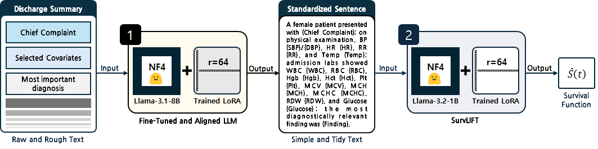

강신성 Shinsung Kang
LLM 파인튜닝·선호도 최적화(RLHF/RLAIF), 시계열 자료분석, 통계분석 및 시각화 수행 가능
About
전북대학교 통계학 학사 졸업 예정(2027.02). 학부 과정 중 LLM 사후학습 및 생성 텍스트 판별, 시계열 전이학습 관련 연구에 참여하여 실험 및 논문 작성을 수행해왔습니다. 실험에 필요한 Ubuntu 기반 Docker 컨테이너 구축, 패키지 종속성 관리에 능숙합니다. R을 이용한 고전적인 데이터 분석부터, PyTorch·vLLM 기반의 모델 학습·서빙까지 폭넓게 처리할 수 있습니다.
Featured Projects
MIMIC-IV 임상 텍스트 LLM 정렬 파이프라인 SurvLLM
연구 진행중
퇴원요약지를 생존분석용 임상 변수로 바꾸는 LLM 사후학습 파이프라인 — 텍스트 규격화 단계 단독 구축

- 개요
- 의무기록지 텍스트를 기반으로 생존분석을 수행하는 2단계 파이프라인
1
텍스트 규격화 — 오픈소스 LLM에 QLoRA를 이용하여 SFT와 선호도 조정(DPO/PPO)을 적용, 규격화되지 않은 의무기록지 텍스트를 약속된 문장 형태로 변환
2
생존분석 — 규격화된 문장을 입력하여 생존함수 Ŝ(t)를 추정
- 기여
- Phase 1 전면 담당. 데이터 구축, SFT, 선호도 레이블링(200건 중 130건 직접), DPO와 RM+PPO 두 경로 구현을 단독 수행. 규격화 문장을 15개 임상 피쳐로 파싱해 Phase 2에 전달
인간/LLM 생성 텍스트 판별 연구 LLMdetector
KCI 등재 · 공동 1저자
해석 가능한 통계 피처로 인간 vs LLM 텍스트를 판별 — 이진 정확도 97.8%, 생성 모델 식별 86.0%
- 문제
- LLM 생성 텍스트를 블랙박스 분류기가 아닌 해석 가능한 통계적 근거로 판별하고, 나아가 GPT·Gemini·Claude·DeepSeek 중 어느 모델이 생성했는지까지 식별하는 문제
- 접근
- Quora 질문(데이터 오염 방지를 위해 3년 이전 게시글 한정)에 대한 인간·4개 LLM 답변 14,833건의 코퍼스를 사용해, 문체 통계(어휘 밀도·가독성 지수 등) + Llama-3.1-8B perplexity + 계층적 LDA 토픽 분포 피처를 결합하고 PyTorch DNN으로 분류. Ablation 3종으로 피처별 기여도를 정량화
- 성과
- 이진(human vs LLM) 정확도 97.8%, 5-way 생성 주체 식별 86.0% — 원시 토큰 임베딩 베이스라인(55.6%) 대비 30%p 이상 향상. 인간 텍스트의 perplexity가 LLM 대비 약 2배 높음을 정량 확인
- 역할
- Perplexity 계산·피처 주입 구현, 시각화, LDA·DNN·평가 지표 코드 오류 검토와 버전 관리, 해당 파트 논문 집필 및 관련 연구 조사 수행
시계열 전이학습 베이스라인 실험 인프라 TSTF
IEEE Access 논문 기여
레거시 Keras 실험을 PyTorch로 단독 재구현하고, 데이터셋당 500개 모델 앙상블 실험을 멀티 GPU로 자동화
- 문제
- N-BEATS 전이학습 논문(IEEE Access)의 비교 실험에 필요한 PatchTST 베이스라인이 레거시 Keras 코드로는 재현·확장이 어려운 상황. 타겟 데이터셋 7종 × 손실함수 5종 × 모델 100개의 실험 매트릭스를 감당할 인프라가 필요
- 접근
- HuggingFace PatchTST 백본을 M4 데이터로 부트스트랩 사전학습한 뒤 head를 교체(Transformer/LSTM/MLP)해 파인튜닝하는 전이학습 파이프라인을 PyTorch로 구축하고, median·지수 가중 앙상블로 최종 예측을 산출. 21개 실험 태스크를 multiprocessing 큐와 GPU 라운드로빈으로 자동화 — 결과 존재 시 스킵하는 재시작 안전 설계로 L40S 2-GPU 활용률 98%를 달성
- 품질 기여
- 원본 실험 코드의 결함(MASE 손실 오구현, MAPE의 0값 발산, 데이터 분할 분포 불일치)을 발견·문서화하고 방어 로직을 반영. 베이스라인 실험 결과는 논문 최종본에 수록
- 역할
torch/디렉토리 100% 단독 구현 및 결과 집계·보고 (논문 Acknowledgement 기재)
NYC 택시 트래픽 대시보드 NYCTaxiDash
라이브 데모
택시 트래픽을 요일·시간·지역으로 탐색하는 인터랙티브 대시보드 — 클로드 코드 기반 기존 프로젝트 개선
- 개요
- NYC 택시 운행 로그를 통해 교통 상황을 간접적으로 파악하기 위한 대시보드. 데이터시각화 강의 과제로 제작한 정적 히트맵·경로도를, 바이브 코딩을 통하여 실무 수준의 인터랙티브 제품으로 재구축
- 접근
- 순수 정적 스택(MapLibre GL + Plotly.js + 바닐라 JS)으로 서버 없이 GitHub Pages 배포. 정제된 트립 14,446건을 브라우저에 싣고 요일·시간 필터를 클라이언트에서 실시간 재집계. 도로망 통행 플로우는 osmnx 최단경로를 빌드 전 집계
- 핵심 기능
- 두 레이어 — ① 도로 플로우(두께=통행량, 색=세그먼트 평균 속도로 정체 인코딩) ② 헥스빈 히트맵 (요일 멀티선택 × 시간대). 선택에 연동되는 KPI·히스토그램, 최단경로 거리 기반 속력 계산
- 역할
- Claude Code와의 반복적인 페어 프로그래밍으로 데이터 파이프라인부터 프론트 시각화까지 구현. 표본 부족 셀 반투명 처리, 속력의 하한 추정 성격 명시 등 시각적 대비 요인 및 통계적 정직성 부여
Publications & Contributions
- Hyungbin Park†, Shinsung Kang†, Kihoon Lee, Gwangsu Kim. (2026). Study on comparative and discriminatory methodology of human and machine-generated languages. Korean Journal of Applied Statistics, 39(3), 235–255. † 공동 1저자 DOI
- Minwoo Lee, Youngmi Lee, Gwangsu Kim. (2026). Transfer Learning Based on N-BEATS in Forecasting Univariate Time Series. IEEE Access, 14, 45191–45212. 베이스라인 실험 기여 (Acknowledgement) Link
Skills
- 언어
- Python, R, Julia, SAS, C#
- ML · DL
- PyTorch, HuggingFace(Transformers·PEFT·TRL), vLLM, scikit-learn
- 데이터 · 시각화
- SQL(ANSI·Oracle), pandas, numpy, Plotly, matplotlib, seaborn
- 인프라 · 도구
- Linux, Docker, git/GitHub, Claude Code, wandb, FSDP
Education & Certificates
- 전북대학교 통계학 학사 (2027.02 졸업 예정)
- 빅데이터분석기사 (BAE)
- SQLD (SQL Developer)
- TOEIC 830 (2025.04 취득)